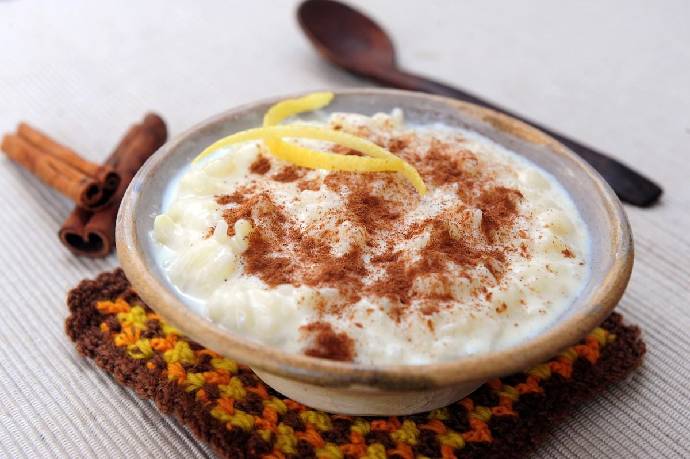

RECETA DE MAZAMORRA ARGENTINA

INGREDIENTES
- 200 g de maíz blanco (maíz pisado o maíz para mazamorra)
- 1 litro de agua
- 1 litro de leche
- 200 g de azúcar
- Una rama de canela
- Una cdta de esencia de vainilla
- Ralladura de un limón (opcional)
PREPARACIÓN
- Lavar bien el maíz blanco y dejarlo en remojo durante al menos 12 horas o toda la noche. Esto ayudará a que
el maíz se ablande y se cocine más rápido.
- Escurrir el maíz y colocarlo en una olla grande con el litro de agua. Cocinar a fuego medio hasta que el
maíz esté bien tierno. Este proceso puede tardar entre 1 y 2 horas, dependiendo de la dureza del maíz. Si es
necesario, agregar más agua durante la cocción para que el maíz siempre esté cubierto.
- Una vez que el maíz está tierno, agregar la leche, el azúcar, la rama de canela y la esencia de vainilla.
- Mezclar bien y continuar cocinando a fuego lento, removiendo ocasionalmente para evitar que se pegue.
- Cocinar durante unos 30 minutos más o hasta que la mezcla espese y tome una consistencia cremosa. Si querés,
agregar la ralladura de limón para un toque de frescura.
- Retirar la rama de canela y dejar enfriar un poco antes de servir. La mazamorra se puede disfrutar tanto
caliente como fría.
- Opcional: para una versión más rica, se puede agregar una cda de dulce de leche al servir.
PUEDES VER EL VIDEO DE LA PREPARACIÓN AQUÍ!!!
PUEDES LEER ESTA RECETA EN "CUCINARE.TV"!!
LEER RECETA DE EMPANADAS DE HUMITA
VOLVER AL INICIO